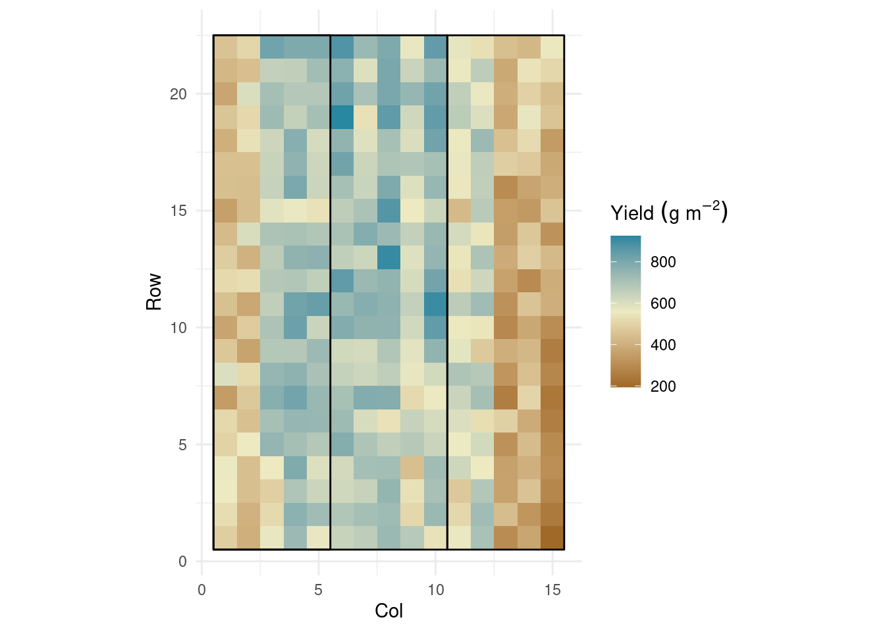
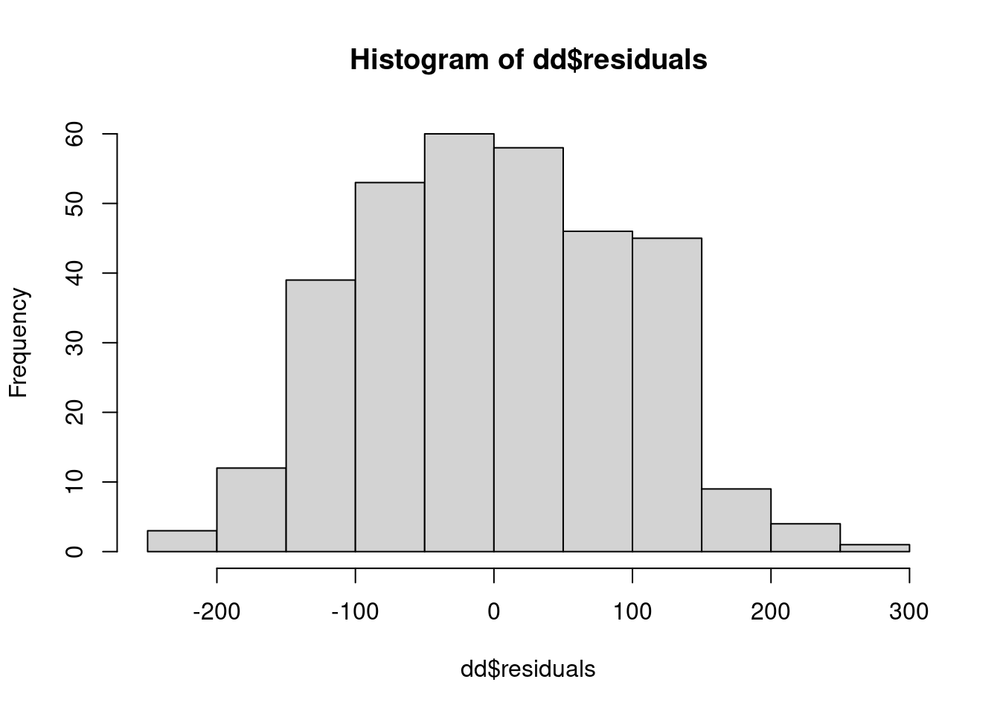
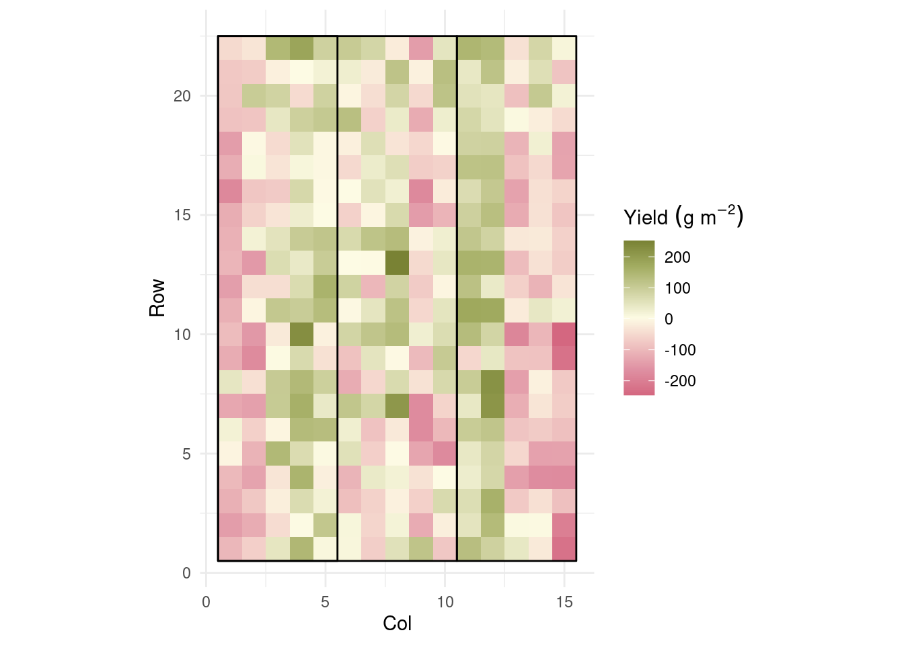
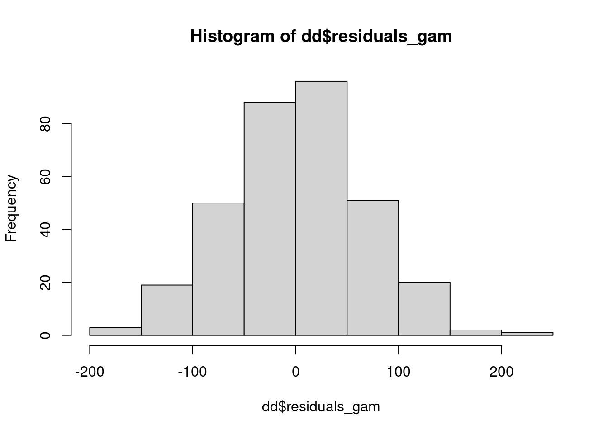
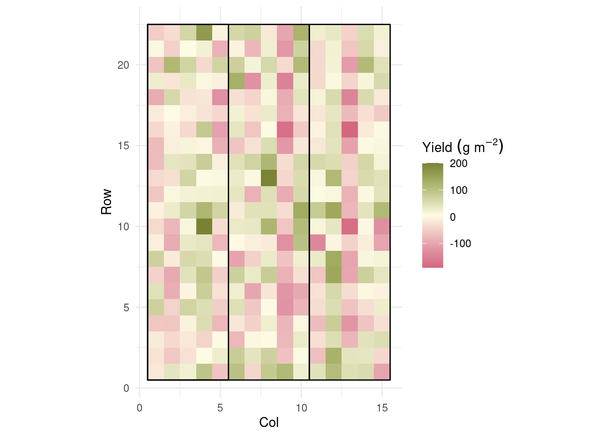

library(tidyverse)
library(agridat)Day 29 - 10/28/2024
Mixed Models
- A combination of “fixed effects” and “random effects”.
- Slap a new set of assumptions on top of the ones we had.
- We estimate fixed effects, \(\mu, \boldsymbol{\beta}\), and random effects, \(\sigma^2_u, \sigma^2_v, \sigma^2_{\varepsilon}\), etc.
- Review the assumptions of the general linear model vs. the general linear mixed model.
- Discuss the type of data needed for a variable with random effects.
Fixed effects, random effects
- When should we consider random/fixed effects? There are many opinions about this - see Gelman (2005), page 20.
- A few differences:
- Methods of estimation. LSE, shrinkage.
- What process is being studied? (interest at the population-level versus at the individual-level)
- How many levels does the factor have, vs. how many did we record?
- Different types of inference we obtain.
- Methods of estimation. LSE, shrinkage.
- Should blocks be fixed or random?
Restricted maximum likelihood (REML)
REML is the default in most cases because, for small data (aka most cases), maximum likelihood (ML) provides variance estimates that are downward biased.
Why is the unbiased estimation of variance components so important?
- Relationship between variance estimates, standard error, confidence intervals, t-tests, type I error.
- Relationship between variance estimates, standard error, confidence intervals, t-tests, type I error.
In REML, the likelihood is maximized after accounting for the model’s fixed effects.
In ML, \(-\ell_{ML}(\boldsymbol{\sigma; \boldsymbol{\beta}, \mathbf{y}}) = - (\frac{n}{2}) \log(2\pi)-(\frac{1}{2}) \log (|\mathbf{V}(\boldsymbol\sigma)|) - (\frac{1}{2}) (\mathbf{y}-\mathbf{X}\boldsymbol{\beta})^T[\mathbf{V}(\boldsymbol\sigma)]^{-1}(\mathbf{y}-\mathbf{X}\boldsymbol{\beta})\)
In REML, \(\ell_{REML}(\boldsymbol{\sigma};\mathbf{y}) = - (\frac{n-p}{2}) \log (2\pi) - (\frac{1}{2}) \log (|\mathbf{V}(\boldsymbol\sigma)|) - (\frac{1}{2})log \left( |\mathbf{X}^T[\mathbf{V}(\boldsymbol\sigma)]^{-1}\mathbf{X}|\right) - (\frac{1}{2})\mathbf{r}[\mathbf{V}(\boldsymbol\sigma)]^{-1}\mathbf{r}\), where \(p = rank(\mathbf{X})\) and \(\mathbf{r} = \mathbf{y}-\mathbf{X}\hat{\boldsymbol{\beta}}_{ML}\).
- Start with initial values for \(\boldsymbol\sigma\), \(\tilde{\boldsymbol{\sigma}}\).
- Compute \(\mathbf{G}(\tilde{\boldsymbol{\sigma}})\) and \(\mathbf{R}(\tilde{\boldsymbol{\sigma}})\).
- Obtain \(\boldsymbol{\beta}\) and \(\mathbf{b}\).
- Update \(\tilde{\boldsymbol{\sigma}}\).
- Repeat until convergence.
- Start with initial values for \(\boldsymbol\sigma\), \(\tilde{\boldsymbol{\sigma}}\).
An applied example
- Review last class (shrinkage)
- Randomized complete block designs
data(gilmour.serpentine)
dd <- gilmour.serpentine
dd <- dd %>%
mutate(rowf=factor(row), colf=factor(10*(col-8)))
str(dd)'data.frame': 330 obs. of 7 variables:
$ col : int 1 1 1 1 1 1 1 1 1 1 ...
$ row : int 1 2 3 4 5 6 7 8 9 10 ...
$ rep : Factor w/ 3 levels "R1","R2","R3": 1 1 1 1 1 1 1 1 1 1 ...
$ gen : Factor w/ 107 levels "(WWH*MM)*WR*",..: 4 10 15 17 21 32 33 34 72 74 ...
$ yield: int 483 526 557 564 498 510 344 600 466 370 ...
$ rowf : Factor w/ 22 levels "1","2","3","4",..: 1 2 3 4 5 6 7 8 9 10 ...
$ colf : Factor w/ 15 levels "-70","-60","-50",..: 1 1 1 1 1 1 1 1 1 1 ...polygon <- data.frame(rep = rep(c("R1", "R2", "R3"), each = 4),
col = rep(c(.5, 5.5, .5, 10.5, 10.5, 15.5), each =2),
row = rep(c(.5, 22.5, 22.5, .5), 3))
dd %>%
ggplot(aes(col, row))+
geom_raster(aes(fill = yield))+
coord_equal()+
geom_polygon(aes(group = rep),
data = polygon,
fill = NA, color = 'black')+
rcartocolor::scale_fill_carto_c(palette = "Earth",
name = expression(Yield~(g~m^{-2}))) +
theme_minimal()+
labs(x = "Col",
y = "Row")
library(nlme)
m_fixed <- lm(yield ~ 0 + gen + rep, data = dd)
m_mixed <- lme(yield ~ 0 + gen,
random = ~ 1 | rep,
data = dd)
m_mixedLinear mixed-effects model fit by REML
Data: dd
Log-restricted-likelihood: -1440.145
Fixed: yield ~ 0 + gen
gen(WWH*MM)*WR* gen(WqKPWmH*3Ag genAMERY genANGAS genAROONA
709.0000 733.3333 615.6667 576.3333 555.3333
genBATAVIA genBD231 genBEULAH genBLADE genBT_SCHOMBURG
533.6667 638.6667 535.3333 439.0000 660.0000
genCADOUX genCONDOR genCORRIGIN genCUNNINGHAM genDGR/MNX-9-9e
485.6667 584.6667 491.3333 454.3333 661.3333
genDOLLARBIRD genEXCALIBUR genGOROKE genHALBERD genHOUTMAN
508.3333 654.0000 567.3333 655.6667 499.6667
genJANZ genK2011-5* genKATUNGA genKIATA genKITE
494.3333 621.6667 598.6667 543.3333 529.0000
genKULIN genLARK genLOWAN genM4997 genM5075
618.0000 372.6667 556.6667 563.0000 514.3333
genM5097 genMACHETE genMEERING genMOLINEUX genOSPREY
606.3333 477.6667 461.3333 543.3333 547.0000
genOUYEN genOXLEY genPELSART genPEROUSE genRAC655
572.3333 487.3333 508.6667 425.3333 596.3333
genRAC655'S' genRAC696 genRAC710 genRAC750 genRAC759
595.3333 705.3333 658.0000 631.6667 667.0000
genRAC772 genRAC777 genRAC779 genRAC787 genRAC791
714.0000 536.6667 712.6667 591.0000 636.3333
genRAC792 genRAC798 genRAC804 genRAC805 genRAC806
606.6667 707.3333 664.0000 666.0000 673.6667
genRAC807 genRAC808 genRAC809 genRAC810 genRAC811
617.6667 655.0000 665.6667 577.3333 751.3333
genRAC812 genRAC813 genRAC814 genRAC815 genRAC816
615.0000 625.6667 636.6667 598.0000 642.6667
genRAC817 genRAC818 genRAC819 genRAC820 genRAC821
609.0000 602.0000 587.6667 708.0000 610.6667
genROSELLA genSCHOMBURGK genSHRIKE genSPEAR genSTILETTO
524.6667 576.6667 581.0000 454.3333 552.0000
genSUNBRI genSUNFIELD genSUNLAND genSWIFT genTASMAN
490.6667 502.3333 526.3333 512.0000 548.0000
genTATIARA genTINCURRIN genTRIDENT genVF299 genVF300
644.6667 690.0000 576.3333 642.6667 597.3333
genVF302 genVF508 genVF519 genVF655 genVF664
600.6667 720.6667 708.0000 548.8333 602.3333
genVG127 genVG503 genVG506 genVG701 genVG714
599.3333 666.0000 600.3333 689.6667 600.6667
genVG878 genWARBLER genWI216 genWI221 genWI231
761.3333 492.0000 713.0000 691.6667 490.6667
genWI232 genWILGOYNE genWW1402 genWW1477 genWW1831
652.6667 578.0000 591.6667 523.3333 622.3333
genWYUNA genYARRALINKA
532.3333 464.0000
Random effects:
Formula: ~1 | rep
(Intercept) Residual
StdDev: 112.8552 115.5814
Number of Observations: 330
Number of Groups: 3 Modeling assumptions
dd$residuals <- residuals(m_mixed)
hist(dd$residuals)
dd %>%
ggplot(aes(col, row))+
geom_raster(aes(fill = residuals))+
coord_equal()+
geom_polygon(aes(group = rep),
data = polygon,
fill = NA, color = 'black')+
rcartocolor::scale_fill_carto_c(palette = "ArmyRose",
direction = -1,
name = expression(Yield~(g~m^{-2}))) +
theme_minimal()+
labs(x = "Col",
y = "Row")
library(mgcv)This is mgcv 1.9-1. For overview type 'help("mgcv-package")'.m_fixed_spatial <- gam(yield ~ 0 + gen + rep + s(col, row, bs = "tp", k =7),
data = dd)dd$residuals_gam <- residuals(m_fixed_spatial)
hist(dd$residuals_gam)
dd %>%
ggplot(aes(col, row))+
geom_raster(aes(fill = residuals_gam))+
coord_equal()+
geom_polygon(aes(group = rep),
data = polygon,
fill = NA, color = 'black')+
rcartocolor::scale_fill_carto_c(palette = "ArmyRose",
direction = -1,
name = expression(Yield~(g~m^{-2}))) +
theme_minimal()+
labs(x = "Col",
y = "Row")
## compare standard errors
summary(m_fixed)$coefficients[1:10,2]gen(WWH*MM)*WR* gen(WqKPWmH*3Ag genAMERY genANGAS genAROONA
67.33486 67.33486 67.33486 67.33486 67.33486
genBATAVIA genBD231 genBEULAH genBLADE genBT_SCHOMBURG
67.33486 67.33486 67.33486 67.33486 67.33486 summary(m_fixed_spatial)$se[1:10]gen(WWH*MM)*WR* gen(WqKPWmH*3Ag genAMERY genANGAS genAROONA
50.59686 52.60848 53.99190 56.07331 53.81076
genBATAVIA genBD231 genBEULAH genBLADE genBT_SCHOMBURG
52.76777 51.39533 53.51531 52.50959 54.14242